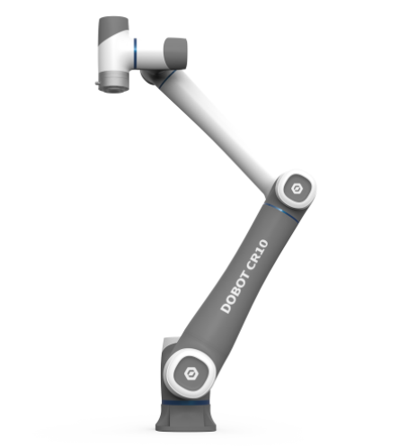
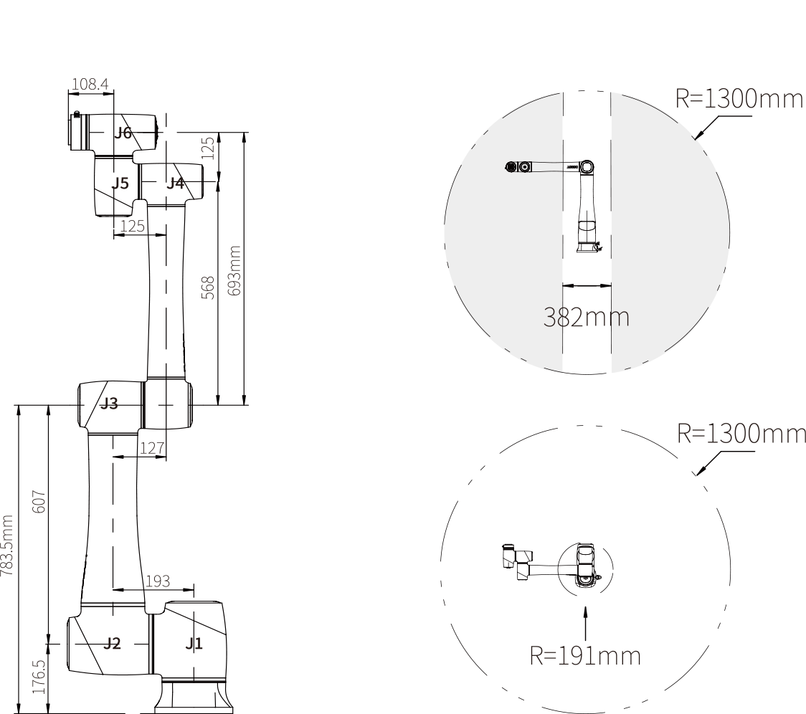

Specifications
In-Depth CR-Series Arm Specifications
CR3
CR5
CR10
CR16
Whole Family Specifications
Controller Specifications
End Effector
Certifications
Getting Started
End Effector Selection
DobotSCStudio
I/O Interface
Modbus Interface
TCP/IP Protocol
Cobot Applications
Interbotix X-Series Manipulators Documentation
Specifications
CR10
Edit on GitHub
CR10

Product Weight
Maximum Payload
Max Reach
Rated Voltage
Repeatability
Communication
38kg
10kg
1525mm
48VDC
±0.03mm
TCP/IP
Modbus
EtherCAT
WiFi
